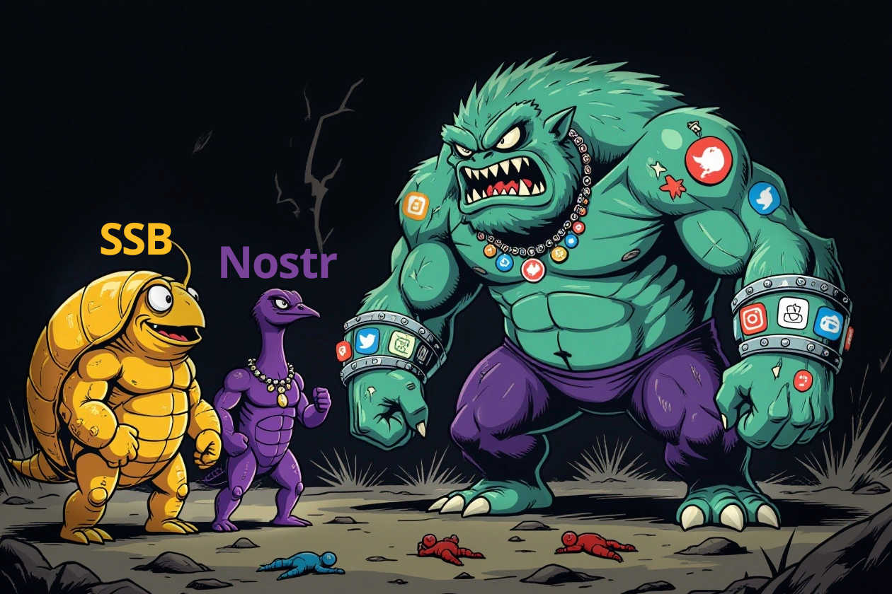

Ω
Spasm
The future of social media is here
Desktop: use Space or right/left arrows to navigate
Mobile: swipe up/down (portrait) or left/right (landscape)
Social media is broken
People use DeFi, cryptocurrencies, p2p markets, but the vast majority of communication is still controlled by a handful of slave tech platforms.
Let's have a look at the history of decentralized social media platforms, mentioning the most notable solutions.
Traditional social media (TraSh)
Most people use centralized slave tech platforms like Twitter, Telegram, Discord, Reddit, Facebook, and Instagram.
- Lack any interoperability
- Censor alternative opinions
- Track users and sell their data
- Controlled by corporations
- Discriminate against AI agents
- Usually block Tor traffic
- Might restrict VPN traffic
- Often restrict FOSS clients
- Require email addresses
- Sometimes require phone numbers
- Censor alternative opinions
- Track users and sell their data
- Controlled by corporations
- Discriminate against AI agents
- Usually block Tor traffic
- Might restrict VPN traffic
- Often restrict FOSS clients
- Require email addresses
- Sometimes require phone numbers
